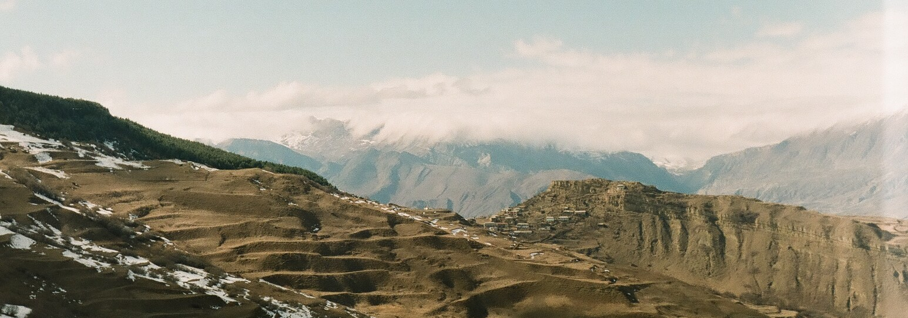
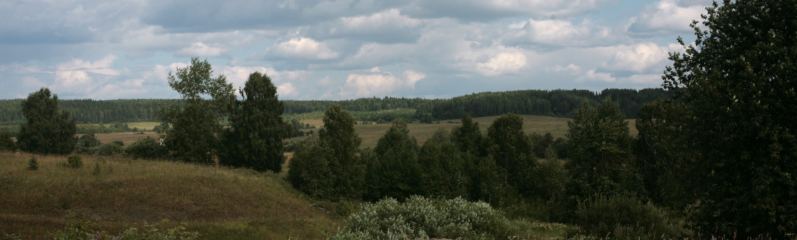

Международная лаборатория языковой конвергенции
Одна из задач Международной лаборатории языковой конвергенции — создание языковых ресурсов. В сотрудничестве с лингвистами из других институтов мы собираем и обрабатываем данные для словарей, разрабатываем устные корпуса билингвального и диалектного русского, а также других малых языков России. Помимо этого, мы работаем над проектами, посвященными языковым контактам и распределению различных грамматических явление на территории Дагестана, самой многоязычной республике России.

География источников данных для корпусов и словарей
